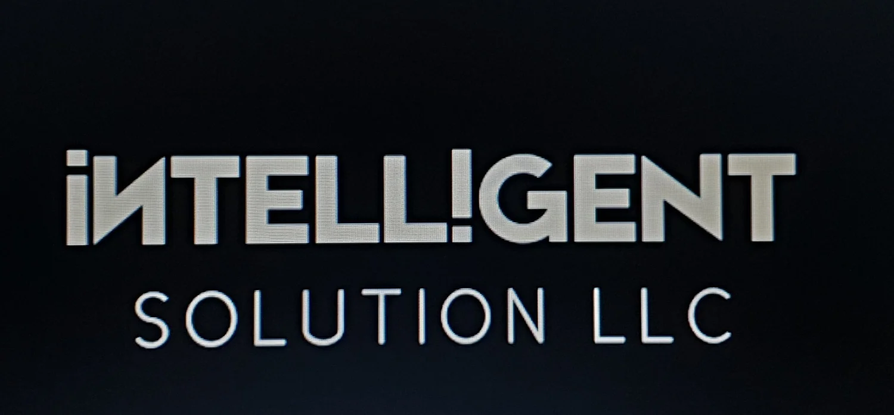

Murakkab infratuzilma loyihalarini kompleks kuzatib borish: shartnomani tuzishdan tortib nizolarni hal qilishgacha.
BRIDGE CONSULT — xalqaro infratuzilma loyihalarida shartnoma injiniringi, qurilish shartnomalarini boshqarish va nizolarni hal qilishga ixtisoslashgan mustaqil konsalting kompaniyasi.
Kompaniya davlat sektori mijozlari, xalqaro moliya institutlari, investorlar va pudratchilarga yirik infratuzilma loyihalarini, shu jumladan xalqaro taraqqiyot banklari tomonidan moliyalashtiriladigan loyihalarni amalga oshirishda ekspert yordamini taqdim etadi.
Kompaniya 2016-yilda tashkil etilgan va O'zbekiston Respublikasida ro'yxatdan o'tgan.
Bridge Consult missiyasi — professional shartnoma injiniringi, qurilish shartnomalarini samarali boshqarish va nizolarni hal qilishning zamonaviy mexanizmlarini qo'llash orqali xalqaro infratuzilma loyihalarini muvaffaqiyatli amalga oshirishni qo'llab-quvvatlashdir.
Biz loyihaning barcha bosqichlarida xalqaro ilg'or tajribalarni, FIDIC standartlarini hamda shartnomalar va loyihalarni boshqarishdagi chuqur ekspertizani joriy etish orqali shaffoflik, huquqiy ishonchlilik va xavflarni samarali boshqarishni ta'minlashga intilamiz.
Bizning maqsadimiz — davlat sektori, xalqaro moliya institutlari, investorlar va pudratchilar o'rtasida hamkorlik uchun ishonchli huquqiy va boshqaruv asosini yaratishdir.
Bridge Consult xalqaro infratuzilma loyihalarida maslahat xizmatlarini taqdim etadi.
Nizolarni hal qilishning eng yaxshi xalqaro amaliyotlarini loyihalarning real sharoitlariga joriy etish.
Xalqaro muhandis-konsultantlar federatsiyasi (FIDIC) standart shartnomalarning oltin standartini taqdim etadi. Biz proformalarning barcha turlarini qo'llash bo'yicha chuqur tajribaga egamiz, jumladan:
FIDIC proformalari, EPC shartnomalari va xalqaro moliya institutlarining qat'iy talablarini chuqur tushunish.
Xalqaro shartnomalarni yuridik kuchini yo'qotmagan holda O'zbekiston Respublikasi huquqiy maydoniga integratsiya qilish.
Mijoz manfaatlarini barcha darajalarda himoya qilish: smeta auditidan tortib arbitrajdagi vakillikkacha.

Toshkent shahrida IV yozgi Osiyo o'smirlar o'yinlarini o'tkazish uchun zamonaviy sport inshootlarini qurish.

EPC+F modeli bo'yicha infratuzilma loyihalari uchun xaridlar va shartnomalarni boshqarish tizimini ishlab chiqish hamda joriy etish.

CAREC 2 Transport yo'lagi. Buyurtmachi: EVRASCON AJ.
Yangiyo'l va Jiydakapa
Suv ta'minoti tizimlarini rekonstruksiya qilish. Moliyalashtirish: Jahon banki, YTTB. FIDIC Sariq kitob.
Namangan
Shaharning shimoliy qismini suv bilan ta'minlash (60.07 km quvur). Moliyalashtirish: OPEK Jamg'armasi.
Samarqand viloyati
Suv olish inshootlarini qurish. Moliyalashtirish: OTB.
BRIDGE CONSULT poydevori — bu mutaxassislarimizning noyob tajribasidir. Biz muhandislik, yurisprudensiya va xalqaro arbitraj sohasida o'n yillik tajribaga ega bo'lgan professionallarni birlashtirdik.

Infratuzilma shartnomalari | FIDIC | EPC | Xalqaro arbitraj
Professional akkreditatsiya va maslahat faoliyati:

Xalqaro arbitraj | Institutsional islohotlar | Raqamli iqtisodiyotni tartibga solish
Professional akkreditatsiya va maslahat faoliyati:
Professional amaliyot quyidagilarni o'z ichiga oladi:

FIDIC shartnomalari bo'yicha yetakchi mutaxassis | Infratuzilma loyihalarini boshqarish
Ernest Belousov — xalqaro qurilish shartnomalarini boshqarish sohasida mutaxassis bo'lib, murakkab infratuzilma loyihalarini kuzatib borishga ixtisoslashgan. FIDIC proformalari (Qizil, Sariq, Kumush kitoblar) bilan ishlashda chuqur kompetensiyalarga ega bo'lgan Ernest sshartnomalarni samarali ma'muriylashtirishni va xalqaro muhandislik standartlariga qat'iy rioya etishni ta'minlaydi.

Smeta ishi | Qiymatni baholash | Tender hujjatlari
Lyutsiya Shamilyevna Axmediyeva O'zbekiston qurilish sohasida ish hajmlarini nazorat qilish va texnik boshqarish bo'yicha 40 yildan ortiq tajribaga ega. Uning professional tajribasi tender, loyiha va smeta hujjatlarini tayyorlash, ish hajmlari ro'yxatini (BoQ), qiymatni baholash va budjetni nazorat qilishni o'z ichiga oladi.
Shuningdek, u ish hajmlarini tekshirish, xarajatlarni optimallashtirish, shartnomalarni ma'muriylashtirish va O'zbekistondagi strategik avtomagistral uchastkalarini qurish bilan bog'liq loyihalarni o'z ichiga olgan shartnomaviy masalalar va e'tirozlarni hal qilishda texnik yordam ko'rsatishda ishtirok etgan.

Qurilishda sifat tizimlari | Materiallarni sertifikatlash | ISO 9001
Qurilish injiniringi va sifatni boshqarish bo'yicha 50 yildan ortiq tajriba. Xalqaro moliya institutlari, jumladan Osiyo Taraqqiyot Banki (OTB) va Jahon banki tomonidan moliyalashtiriladigan yirik miqyosdagi infratuzilma loyihalarida ishtirok etish.
Qurilish va infratuzilma loyihalarida sifatni ta'minlash, materiallarni sertifikatlash va muvofiqlikni nazorat qilish sohasidagi professional faoliyat.
Qurilish materiallarini sertifikatlash va sifat menejmenti tizimlari bo'yicha sertifikatlangan mutaxassis. ISO 9001:2015 sifat menejmenti tizimlari bo'yicha sertifikatlangan auditor.
Biz nafaqat loyihalarni kuzatib boramiz, balki jamoalar malakasini ham oshiramiz. Bridge Consult ekspertlari buyurtmachilar va muhandislar uchun FIDIC proformalarini amaliyotda qo'llash, xavflarni boshqarish va shartnomalarni ma'muriylashtirish bo'yicha maxsus seminarlar o'tkazadilar.
Ekspert fikri va kompetensiyalar profili

BRIDGE CONSULT direktori Larisa Belousova bilan mamlakat infratuzilma loyihalari uchun xalqaro standartlarning ahamiyati haqida keng qamrovli intervyu.

Korporativ ekspertizaning batafsil mustaqil sharhi: shartnomalarni tuzilmaga solish va Forensic Delay Analysis'dan tortib, nizolarni hal qilish va mediatsiyagacha.
Kompaniya rahbari OTBning akkreditatsiyadan o'tgan shartnoma menejeri va nizolarni hal qilish bo'yicha mutaxassisi maqomiga ega. Kompaniyamiz xalqaro moliya institutlari, global injiniring hamkorlari va asosiy mijozlar bilan muvaffaqiyatli hamkorlik tajribasidan faxrlanadi. Biz birgalikda yirik infratuzilma loyihalarini eng yuqori standartlarga muvofiq amalga oshirishni ta'minlaymiz. Kompaniya ekspertlari muntazam ravishda Nizolarni hal qilish kengashlaridan (DBs) foydalanish bo'yicha sessiyalarni olib boradilar va sertifikatlangan o'quv dasturlarini o'tkazadilar.


So'rovingizni dastlabki baholash uchun biz bilan bog'laning.